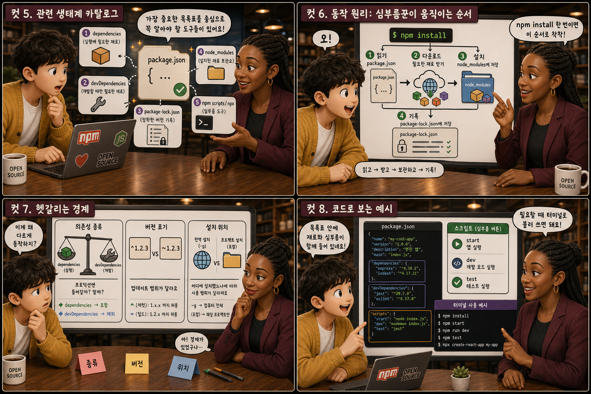
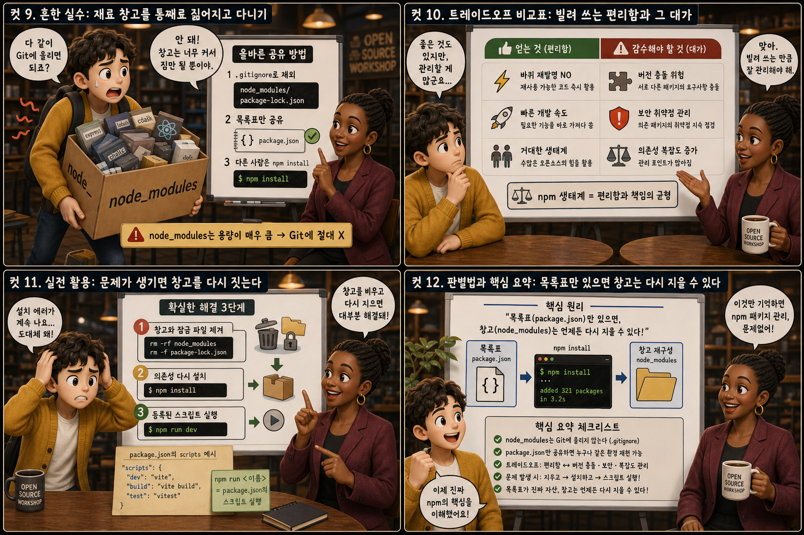

재료 목록표와 심부름꾼에 비유해, 자바스크립트 생태계가 돌아가는 방식을 12컷으로 풀어봅니다.
package.json+npm
코드를 짜다 보면 남이 이미 만들어 둔 기능을 가져다 쓰는 경우가 대부분입니다. 이때 어떤 재료(패키지)가 필요한지 적어두는 목록표가 package.json이고, 그 목록을 보고 실제로 인터넷에서 재료를 구해다 주는 심부름꾼이 npm입니다. 낡은 식탁 위의 빈 냄비, 체크박스가 비어 있는 클립보드, 그리고 배달 가방을 멘 심부름꾼 — 이 그림에서 출발해 이 둘이 어떻게 함께 움직이는지 열두 장면으로 살펴봅니다.
PART 1 / 3 — 두 존재의 발견 (컷 01–04)
fourcut-01 — 컷 01 ~ 04
컷 01
요리를 시작하기 전, 재료는 누가 사올까
새 프로젝트에 필요한 재료를 무엇으로 기록하고 누가 대신 구해다 줄 것인가, 그 질문에서 이야기가 시작된다.
낡은 나무 식탁 위에 놓인 빈 요리 냄비 하나. 그 옆에는 체크박스가 몇 개 비어 있는 다크그레이 클립보드가 세워져 있고, 상단에는 모노스페이스로 package.json이라는 이름표가 붙어 있습니다. 화면 오른쪽에는 레드 배달 가방을 멘 심부름꾼이 자전거 옆에 서 있고, 가슴에는 npm 로고가 새겨져 있습니다. 클립보드와 심부름꾼 사이에 떠 있는 물음표 하나가 이 글 전체의 질문을 대신합니다 — 재료는 누가 적고, 누가 사올까?
컷 02
정의부터 명확히: 목록표와 심부름꾼
package.json은 필요한 재료를 적어두는 설정 파일이고, npm은 그 목록을 읽고 실제 재료를 가져다 설치해 주는 도구다.
package.json은 프로젝트 폴더 안에 있는 하나의 텍스트 파일로, 이 프로젝트의 이름과 버전, 그리고 실행에 필요한 외부 패키지 목록을 name, version, dependencies 같은 항목으로 적어두는 곳입니다. npm(Node Package Manager)은 이 목록을 읽고 실제로 인터넷에 있는 패키지 저장소에서 필요한 코드를 내려받아 프로젝트 안에 넣어주는 프로그램입니다. 클립보드가 재료를 적어두는 종이라면, npm은 그 종이를 들고 실제로 마트를 다녀오는 심부름꾼입니다. config file / installer
컷 03
나란히 비교: 손으로 나르기 vs 목록 한 번에 맡기기
그때그때 파일을 손으로 찾아 다운받는 방식은 번거롭고 실수가 잦지만, package.json에 적어두고 npm install 한 번으로 설치하면 빠르고 정확하다.
예전 방식대로라면 필요한 코드 파일을 검색해서 하나하나 내려받고 프로젝트 폴더에 직접 붙여넣어야 했습니다. 양손 가득 잡동사니 봉투를 들고 낑낑대는 사람처럼, 이 과정은 버전이 안 맞거나 파일을 빠뜨리기 쉬워 번거롭고 실수도 잦았습니다. 지금은 필요한 재료 이름을 package.json에 적어두기만 하면, 터미널에 $ npm install 한 줄만 입력해도 npm이 목록을 읽고 필요한 패키지를 전부 알아서 가지런히 내려받아 줍니다. 목록표 한 장이 있느냐 없느냐가 작업 속도와 정확성을 완전히 바꿔놓습니다.
컷 04
한 문장으로 정리하면
package.json은 프로젝트가 필요로 하는 것을 적어둔 계약서이고, npm은 그 계약서를 실행하는 심부름꾼이다.
PACKAGE.JSON
필요한 것을 적어둔 계약서
NPM
그 계약서를 실행하는 심부름꾼
definition
이 한 문장만 기억해도 이 파일과 도구가 왜 존재하는지 헷갈리지 않을 수 있습니다. 목록을 적는 일과 그 목록대로 실제로 구해오는 일은 서로 다른 역할이지만 항상 함께 움직입니다.
PART 2 / 3 — 생태계와 동작 원리 (컷 05–08)

fourcut-02 — 컷 05 ~ 08
컷 05
관련 생태계 카탈로그: 목록표 주변의 다섯 가지 도구
package.json 주변에는 dependencies, devDependencies, package-lock.json, node_modules, npm scripts, npx처럼 함께 알아야 할 개념들이 있다.
package.json 안에는 실제 서비스 실행에 필요한 dependencies와, 개발할 때만 쓰는 공구함 같은 devDependencies가 구분되어 적힙니다. package-lock.json은 설치된 패키지의 정확한 버전까지 못 박아 기록해 다음에 설치해도 항상 같은 결과가 나오도록 보장하는 파일이고, node_modules는 실제로 다운로드된 패키지들이 쌓이는 재료 창고입니다. npm scripts는 자주 쓰는 심부름을 리모컨 버튼 하나로 등록해 실행하게 해주고, npx는 재료를 창고에 쌓아두지 않고 그 자리에서 한 번만 빌려 쓰고 돌려주는 방법입니다.
컷 06
동작 원리: 심부름꾼이 움직이는 순서
npm install을 실행하면 npm은 package.json을 읽고, 재료를 인터넷에서 내려받아 node_modules에 넣고, 그 결과를 package-lock.json에 기록한다.
터미널에 npm install을 입력하면 npm은 먼저 package.json을 열어 어떤 재료가 필요한지 확인합니다. 그다음 npm 레지스트리라는 거대한 온라인 창고에서 해당 패키지들을 내려받아 프로젝트 폴더 안의 node_modules에 차곡차곡 쌓습니다. 설치가 끝나면 실제로 설치된 정확한 버전을 package-lock.json에 기록해, 다음에 누가 다시 설치하더라도 똑같은 재료가 똑같은 버전으로 갖춰지도록 보장합니다.
컷 07
헷갈리는 경계: 버전 표기와 전역 설치
devDependencies인지 dependencies인지, 버전 앞에 ^나 ~가 붙었는지, 전역 설치인지 프로젝트 설치인지에 따라 동작이 달라진다.
package.json에는 실제 서비스 실행에 필요한 dependencies와 테스트·빌드 도구처럼 개발 중에만 쓰는 devDependencies가 구분되어 있습니다. 버전 앞의 물결(~)은 패치 버전 업데이트까지만, 뾰족 기호(^)는 마이너 버전 업데이트까지 자동으로 허용한다는 뜻으로 시맨틱 버저닝 규칙을 따릅니다. 또한 npm install -g로 설치하면 컴퓨터 전체(동네 창고)에서 쓸 수 있는 도구가 되지만, 그냥 npm install로 설치하면 해당 프로젝트 폴더(각 집의 창고) 안에서만 쓸 수 있어 프로젝트마다 서로 다른 버전을 독립적으로 유지할 수 있습니다.
컷 08
코드로 보는 예시: 목록표와 심부름 버튼
package.json 안에는 재료 목록인 dependencies와 자주 쓰는 심부름을 등록해둔 scripts가 함께 들어있으며, 터미널 명령어로 이를 불러 쓴다.
package.json — 재료 목록표
// 필요한 재료와 자주 쓰는 심부름을 적어둔다
{
"dependencies": { "react": "^18.2.0" },
"scripts": { "dev": "next dev" }
}
터미널 — 심부름 명령
// 목록을 읽고 그대로 실행한다$ npm install
$ npm run dev // scripts.dev 실행
package.json 안의 dependencies 항목에는 "react": "^18.2.0"처럼 사용할 패키지 이름과 버전이 적히고, scripts 항목에는 "dev": "next dev"처럼 자주 실행하는 명령을 미리 이름 붙여 등록해 둘 수 있습니다. 터미널에서 npm install을 실행하면 목록에 적힌 재료가 전부 설치되고, 그 뒤 npm run dev를 실행하면 scripts에 등록해 둔 명령이 그대로 실행됩니다. 목록을 적어두는 파일과 그 목록을 불러 쓰는 명령어가 짝을 이뤄 움직입니다.
PART 3 / 3 — 실전 감각과 요약 (컷 09–12)

fourcut-03 — 컷 09 ~ 12
컷 09
흔한 실수: 재료 창고를 통째로 짊어지고 다니기
node_modules 폴더는 용량이 매우 크기 때문에 Git에 통째로 올리면 안 되며, .gitignore로 제외하고 package.json만 공유해야 한다.
⚠ node_modules를 Git에 통째로 올리면 용량 폭발
node_modules 폴더에는 실제로 설치된 패키지 코드가 전부 들어 있어서 수만 개의 파일과 수백 메가바이트에 이르는 용량을 차지하는 경우가 흔합니다. 이 폴더를 Git 저장소에 그대로 커밋하면 저장소가 지나치게 무거워지고 협업할 때 불필요한 충돌만 늘어납니다.
✓ package.json만 공유하면 충분하다
node_modules는 package.json만 있으면 npm install 한 번으로 언제든 똑같이 다시 만들어낼 수 있으므로, .gitignore 파일에 node_modules를 등록해 애초에 Git이 추적하지 않도록 제외하는 것이 정석입니다.
산더미 창고를 통째로 짊어지고 휘청이며 옮기는 사람과, 가벼운 클립보드 한 장만 들고 가뿐히 걸어가는 사람. 무엇을 들고 다녀야 하는지는 이 대비만으로 충분히 답이 나옵니다.
컷 10
트레이드오프 비교표: 빌려 쓰는 편리함과 그 대가
npm 생태계는 재사용 가능한 코드를 빠르게 가져다 쓸 수 있지만, 그만큼 버전 충돌과 보안 취약점을 계속 관리해야 하는 부담이 따라온다.
convenience comes with maintenance
비교 축
얻는 것 (npm 생태계)
치러야 할 것
개발 속도
이미 검증된 패키지를 몇 초 만에 재사용
패키지를 파악하고 관리할 시간 필요
버전 관리
다양한 재료를 자유롭게 조합
패키지 간 버전 충돌 발생
보안
커뮤니티가 검증한 도장 찍힌 코드
방치된 패키지의 취약점 점검 필요
생태계 규모
거대한 창고 수준의 선택지
정리 정돈이 필요한 어질러진 선반
npm 생태계 덕분에 로그인 화면 하나, 날짜 계산 하나를 처음부터 짜지 않고도 이미 검증된 패키지를 몇 초 만에 가져다 쓸 수 있어 개발 속도가 크게 빨라집니다. 하지만 서로 다른 패키지가 요구하는 버전이 충돌하거나, 오래되어 방치된 패키지에 보안 취약점이 발견되는 일도 자주 벌어집니다. 편리하게 빌려 쓰는 만큼, 어떤 패키지를 얼마나 신뢰하고 최신 상태로 유지할지 꾸준히 관리하는 책임이 함께 따라옵니다.
컷 11
실전 활용: 문제가 생기면 창고를 다시 짓는다
설치 에러가 나면 node_modules와 package-lock.json을 지우고 다시 설치하는 것이 가장 확실한 해결책이며, npm run dev로 등록된 스크립트를 실행하는 것이 일상적인 사용법이다.
🔧 “설치 에러가 난다” → 창고를 다시 짓는다
에러 메시지 먼저 읽기
rm -rf node_modules package-lock.json
npm install로 재설치
⚡ “매일 개발을 시작할 때” → 버튼 하나로
명령어를 길게 외우지 않기
package.json에 scripts 등록해두기
npm run dev 한 줄로 실행
패키지 설치 중 알 수 없는 에러가 계속된다면 대부분의 경우 node_modules 폴더와 package-lock.json 파일을 지우고 npm install을 다시 실행하는 것만으로 해결됩니다. 이는 창고를 통째로 허물고 목록표를 보며 처음부터 다시 짓는 것과 같아서, 어중간하게 꼬여버린 상태를 깔끔하게 초기화해 줍니다. 평소 개발을 시작할 때는 매번 명령어를 길게 치는 대신 package.json에 등록해 둔 npm run dev 같은 스크립트 버튼을 누르는 것이 가장 자연스러운 사용법입니다.
컷 12
판별법과 핵심 요약: 목록표만 있으면 창고는 다시 지을 수 있다
창고(node_modules)가 통째로 사라져도 목록표(package.json)만 있으면 npm install로 언제든 그대로 되살릴 수 있다는 사실이 이 관계의 핵심이다.
가장 간단한 판별법은 이것입니다. node_modules 창고는 통째로 지워져도 package.json 목록표만 있으면 npm install 한 번으로 똑같이 다시 지을 수 있지만, package.json이 사라지면 무엇이 필요했는지 자체를 알 수 없게 됩니다. 무너진 창고 위에서도 멀쩡히 서 있는 클립보드처럼, 실제로 소중히 지키고 버전 관리해야 할 것은 무거운 창고가 아니라 가벼운 목록표입니다.
package.json = 재료 목록npm = 심부름꾼node_modules = 재료 창고package-lock.json = 버전 못박기node_modules는 Git에서 제외판별법: 목록표만 있으면 창고는 재건 가능
하나의 목록표, 하나의 심부름꾼
package.json은 프로젝트가 필요로 하는 재료를 적어두고, npm은 그 목록을 보고 재료를 구해다 줍니다. node_modules라는 창고는 언제든 다시 지을 수 있지만, package.json이라는 목록표는 잃어버리면 안 됩니다. 이 둘의 협업이 오늘날 자바스크립트 생태계가 돌아가는 기본 방식입니다.